SevaOne - Service Plus
Architecture
Draft for discussion
High-Level Diagram
Built on WSO2 Identity Server and WSO2 API Manager.
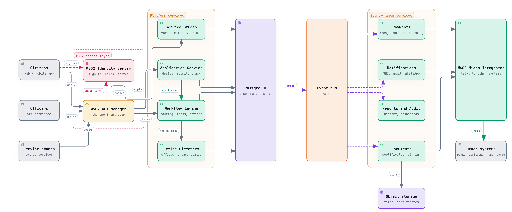
What each part does
Sign-in and access
- WSO2 Identity Server handles sign-in, roles and one set of users per state
- WSO2 API Manager is the only way in: token check, limits, versions, API portal for departments
- Officers get access by office and role, not by designation alone
How an application moves
- Citizen applies through the front door
- Application Service saves it and starts a case in the Workflow Engine
- Office Directory says which office and role handle it
- Every change also leaves an event on the bus
Events do the follow-up work
- Payments, messages, certificates and history all react to events
- A failure in one does not undo the application
- Payments are matched against bank records, not trusted from the browser
What we use and why
- Kafka for events: proven at scale and open source
- WSO2 Micro Integrator for all outside connections, so every one is built and watched the same way
- One PostgreSQL with a separate schema per state, so states stay apart without many databases
- S3-compatible object storage for files and certificates, hosted by the government
End-to-End Flows
One application and its money, seen across all the modules.
From Apply to Certificate
One application, start to finish, across the modules.
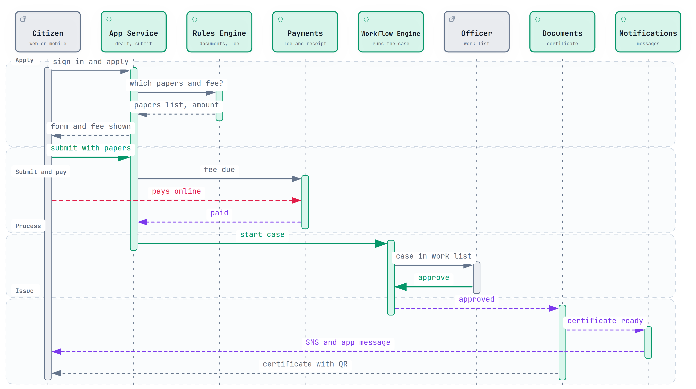
From Apply to Certificate: how it works and what we use
How it works
- Every step passes through the API Manager, which checks the sign-in token first
- The Application Service saves the application, then starts a case
- The officer decides in the Workflow Engine; the certificate follows from the decision event
What we use
- Each box is a module from the earlier pages
- Messages shown with dashes are events, not waiting calls
Rules we keep
- The citizen is never asked twice for the same paper
- A decision and its certificate are separate: a failed certificate does not undo the decision
When something fails
- If payment is not confirmed the case waits; see the payment flow
- If the officer asks for a correction the case returns to the citizen; see the correction flow
Payment, Including When It Is Unclear
What happens when a payment succeeds, fails or never answers.
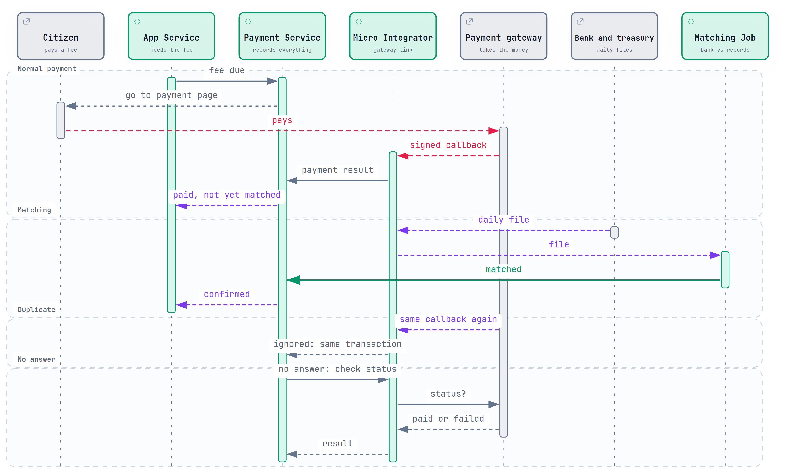
Payment, Including When It Is Unclear: how it works and what we use
How it works
- The Payment Service keeps the amount due, the attempt, the receipt and the money received as four separate things
- A gateway callback marks the attempt; a later bank file confirms it
- Only after matching is the payment confirmed to the application
What we use
- A browser return or a screenshot never counts as proof
- A repeated callback is ignored by its transaction number
Rules we keep
- Payment never approves a case
- Each state uses its own collection accounts and gateways
When something fails
- No answer from the gateway: the status is asked for again until it settles
- If the application cannot be saved after payment, the money stays tied to the application and is applied or refunded
- Anything unmatched goes to a finance problem list
Handing a Citizen to a Department Portal
The token and callback path for services run by another department.
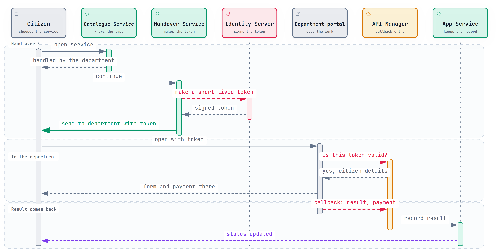
Handing a Citizen to a Department Portal: how it works and what we use
How it works
- The catalogue knows each service is "handed over", so the citizen is not shown a form we do not own
- A short-lived signed token carries who the citizen is
- The department asks us to check the token before it trusts it
What we use
- WSO2 Identity Server signs tokens; WSO2 API Manager receives callbacks
- Callbacks are signed and carry the application reference
Rules we keep
- A token works once and expires quickly
- A callback can be repeated without making a second record
When something fails
- If the citizen stops halfway, the application shows "with department" and can be resumed
- If the callback never arrives, the status is asked for again
- A failed handover tells the citizen clearly and starts nothing
Correction and Resubmission
The same case goes back to the citizen and returns to the same officer.
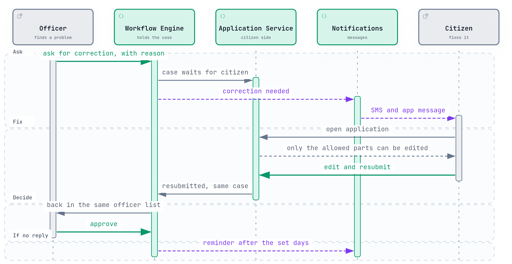
Correction and Resubmission: how it works and what we use
How it works
- The case is not closed and not new; it waits with the citizen
- Only the parts the officer allowed can be changed
- Earlier versions of the form stay on record
What we use
- Workflow Engine holds the state; Application Service shows the editable form
- Notifications are sent from the event
Rules we keep
- Corrections are limited to the stages and fields the service allows
- A correction may need a new payment only if the service says so
When something fails
- No reply by the deadline: a reminder, then escalation
- A failed message does not stop the case
The 20 Modules
Each module: how it works and what we use.
Accounts and Sign-in
Module 1: how people get an account and log in.
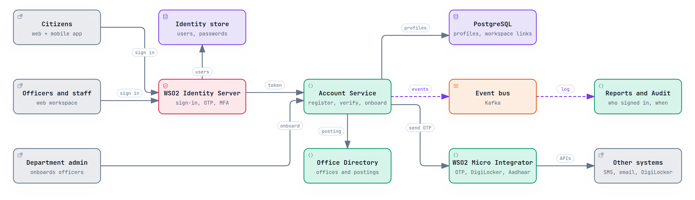
Accounts and Sign-in: how it works and what we use
How it works
- A citizen registers and confirms the phone or email with a one-time code
- An officer is added by an administrator, then activates the account
- Sign-in happens only in the identity server; every service trusts its token
What we use
- WSO2 Identity Server for accounts, passwords, OTP and MFA
- Account Service for registration steps and approvals
- PostgreSQL for profiles; Micro Integrator for SMS, email, DigiLocker and Aadhaar
Rules we keep
- One person, one account; citizen and officer work are separate workspaces
- An officer cannot give themselves authority
- A closed account keeps its history
When something fails
- If the code never arrives the account stays pending; the person can retry or use recovery
- Locked or suspended accounts cannot sign in but nothing is deleted
- Every sign-in and change is logged
Offices and Areas
Module 2: the government structure the platform works from.
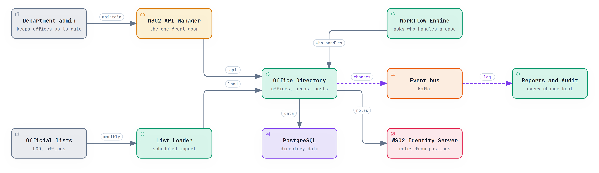
Offices and Areas: how it works and what we use
How it works
- Each state has one shared directory of departments, offices, areas and posts
- Officers hold dated postings to an office and a post
- Other modules ask the directory who should handle a case
What we use
- PostgreSQL schema per state
- A scheduled loader for official area and office lists
- Events on Kafka when something changes
Rules we keep
- Offices and areas are kept apart and linked by a coverage map
- A transfer has an effective date; past postings are never rewritten
- A change is drafted and approved before it goes live
When something fails
- An area with no office shows in a problem list for the admin
- Overlapping areas must be fixed before activation
- Cases already assigned are not moved without a decision
Roles and Access
Module 3: who may see and do what.
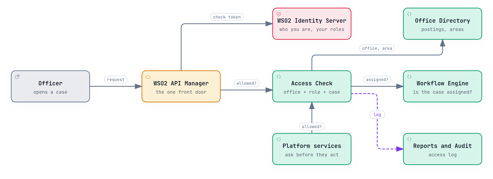
Roles and Access: how it works and what we use
How it works
- The identity server proves who is calling and gives their roles
- The Access Check then looks at office, area and whether the case is assigned to them
- Only then does a service act
What we use
- WSO2 Identity Server roles and tokens
- One Access Check service shared by every module
- Office Directory and Workflow Engine as the facts it checks
Rules we keep
- A designation alone never opens every case
- Citizens see only their own applications
- Every allow and deny is logged
When something fails
- If the directory is unreachable, access is denied, not allowed
- Wrong access is fixed by changing the posting, not by exceptions
- Denied attempts are visible to administrators
Service Catalogue
Module 4: the list of services, and how each one is launched.
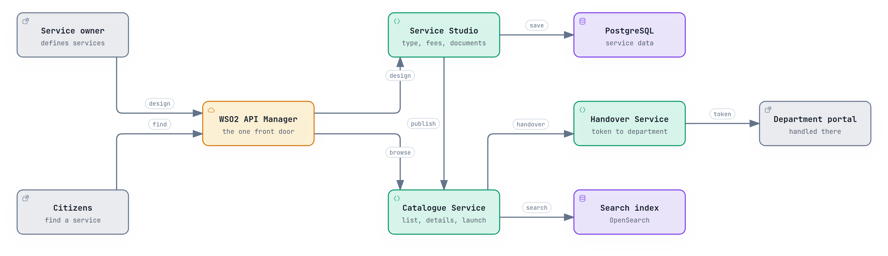
Service Catalogue: how it works and what we use
How it works
- Each service has a type: done inside the platform, collection only, or handed to a department
- The catalogue shows who can apply, documents, fees and time
- Launching reads the type and opens the right path
What we use
- PostgreSQL for service entries
- OpenSearch for finding services by words
- Handover Service with signed tokens for department portals
Rules we keep
- The catalogue is always read live from published services
- A service shows only where it is available and for which channel
- Retired services stay visible in history
When something fails
- If the department portal is down the citizen sees a clear message and nothing is submitted
- If search is down the list still opens
- A handover that is interrupted can be resumed
Form Builder
Module 5: how forms are built and shown.
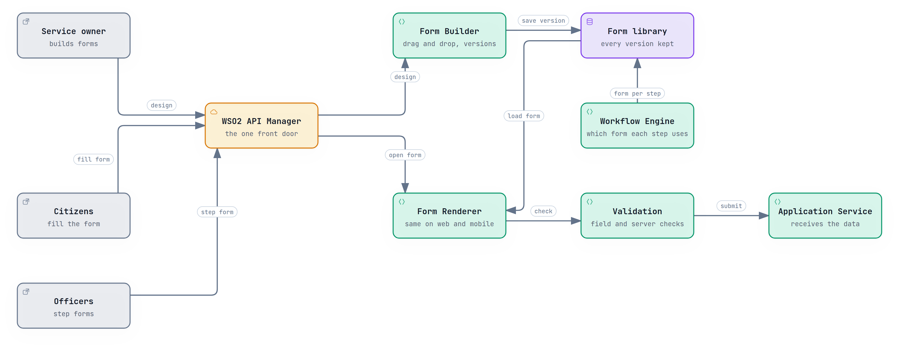
Form Builder: how it works and what we use
How it works
- Forms are stored as versioned definitions, not code
- Sections, fields, conditions, document uploads and languages are all in the definition
- The same renderer draws the form on web and mobile
What we use
- JSON form definitions in PostgreSQL
- An open-source form builder for the drag-and-drop screen
- Validation in the form and again on the server
Rules we keep
- A published form never changes; a change makes a new version
- Submitted applications keep the form version they used
- Applicant forms and officer step forms use the same builder
When something fails
- A field check that fails shows the reason beside the field
- If an outside check is down the form can be saved as a draft
- Server checks always win over what the screen allowed
Rules and Fees
Module 6: who can apply, what is needed, what it costs.
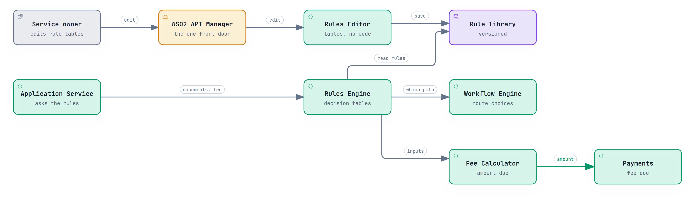
Rules and Fees: how it works and what we use
How it works
- Rules are tables: if the applicant is in this category, ask for these documents and this fee
- The Application Service asks the Rules Engine at the moment of applying
- The same engine can pick the path in the workflow
What we use
- A decision-table rules engine (DMN)
- PostgreSQL for versioned rule tables
- Fee Calculator feeding Payments
Rules we keep
- Rules are versioned with the service and published together
- Ordinary changes need no code; special cases use a reviewed extension
- Fee exemptions are rules, not manual edits
When something fails
- If no rule matches, the application cannot continue and an admin is told
- A rule error never charges the citizen
- Every decision records which rule version was used
Workflow Engine
Module 7: how cases move through the steps a service owner designs.
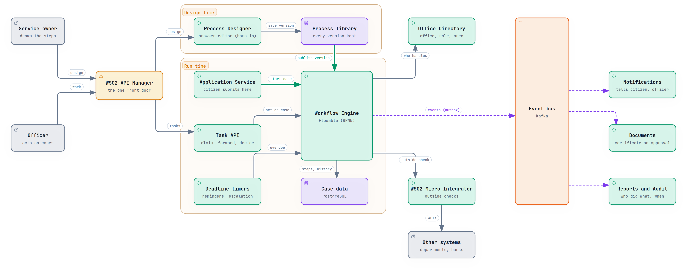
Workflow Engine: how it works and what we use
How it works
- The service owner draws the steps in a browser editor and saves each change as a new version
- Publishing a version makes it live; running cases keep the version they started with
- The Application Service starts a case; the engine asks the Office Directory who handles it
- Officers act through the API Manager, and the engine moves the case to its next step
What we use
- Flowable, an open-source BPMN engine, so we do not build our own
- bpmn.io for drawing, PostgreSQL for versions and cases
- Kafka for events, WSO2 Micro Integrator for outside checks
- WSO2 Identity Server tokens tell the engine who is acting
Rules we keep
- A button's label never decides what happens; each action has a fixed ID
- An officer can act only on cases for their office and role
- Reviews can split and join; deadlines start timers and escalate
- A correction sends the same case back to the citizen and then to the same officer
When something fails
- A failed outside check is retried, then goes to a problem list for the office admin
- A failed message never undoes a decision
- Every step is recorded and cannot be edited later
Applications and Citizen Workspace
Module 8: apply, save, submit and track.
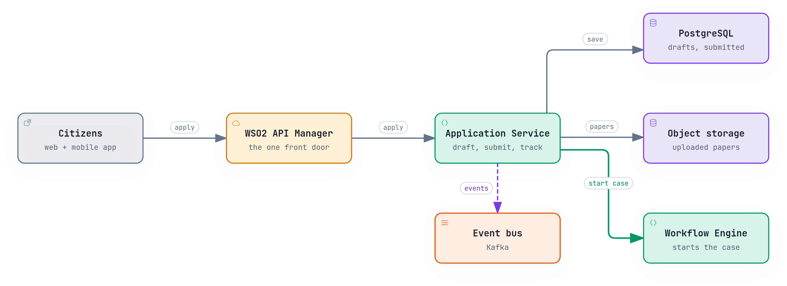
Applications and Citizen Workspace: how it works and what we use
How it works
- A citizen starts, saves a draft, uploads papers and submits
- Submitting saves the application and starts a case
- The citizen can track status and answer correction requests
What we use
- Application Service on PostgreSQL
- S3-compatible object storage for papers
- WSO2 API Manager and Identity Server for access
Rules we keep
- Each submit carries a one-time key so a double tap never makes two applications
- The citizen can edit only what the current stage allows
- The acknowledgement is issued only after the save succeeds
When something fails
- If the network drops, the draft is kept and submit can be tried again
- If starting the case fails the application is held and retried
- Nothing is lost between save and start
Officer Task and Case Work
Module 9: an officer's work list and the case file.
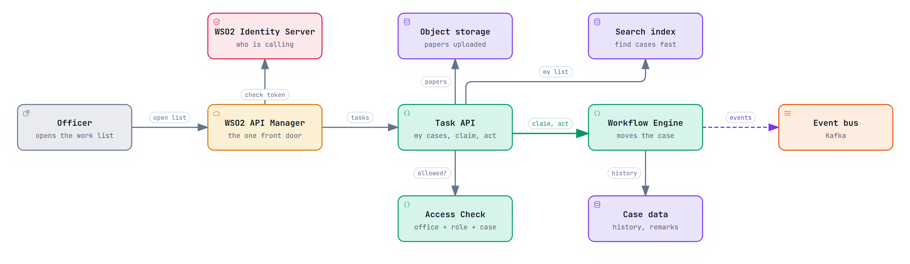
Officer Task and Case Work: how it works and what we use
How it works
- The officer sees only cases they may process
- The case file shows what was submitted, the papers, past actions and remarks
- They claim a case, then forward, approve, reject or ask for a correction
What we use
- Task API in front of the Workflow Engine
- OpenSearch for fast search and filters
- Object storage for the papers
Rules we keep
- Every action has a fixed ID; the button text is only a label
- Claiming stops two officers working one case
- Overdue cases are shown first
When something fails
- If the engine is busy the action is retried safely, never done twice
- A reassigned case keeps its full history
- If search is down the list still loads from the database
Documents and Certificates
Module 10: making, signing and checking certificates.
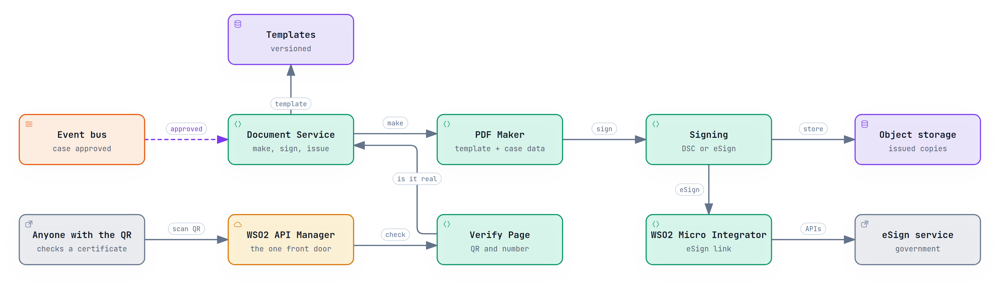
Documents and Certificates: how it works and what we use
How it works
- When a case is approved or rejected an event reaches the Document Service
- It fills the template with the case data, makes a PDF, signs it and stores it
- Every certificate carries a number and a QR that anyone can check
What we use
- Versioned templates in PostgreSQL
- A PDF service, government eSign or DSC through Micro Integrator
- S3-compatible object storage for the issued copy
Rules we keep
- The issued copy is kept exactly as issued
- A correction or cancellation makes a new record, never an edit
- Verification shows only agreed fields
When something fails
- If signing fails the case is decided but the certificate shows as pending and is retried
- Retries are safe: one certificate per decision
- Failures appear in a problem list
Payments
Module 11: fees, receipts and matching the money.
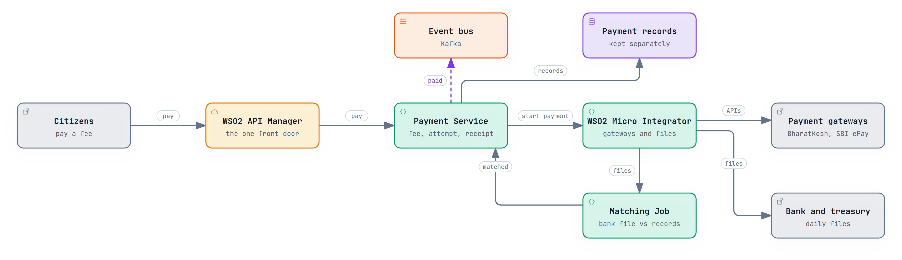
Payments: how it works and what we use
How it works
- The Payment Service keeps four things apart: the amount due, the attempt, the receipt and the money received
- A gateway reply or callback changes the attempt; a later matching job confirms it against bank files
- A paid event lets the application move on
What we use
- Micro Integrator for gateway links
- PostgreSQL for payment records
- A scheduled Matching Job; Kafka for the paid event
Rules we keep
- A browser return or screenshot never proves payment
- Payment never approves a case
- Duplicate callbacks are ignored by transaction number
When something fails
- A payment still pending is checked again until it settles
- If the case save fails after payment the money is held against the application and refunded or applied
- Unmatched transactions go to a finance problem list
Notifications
Module 12: messages to citizens and officers.
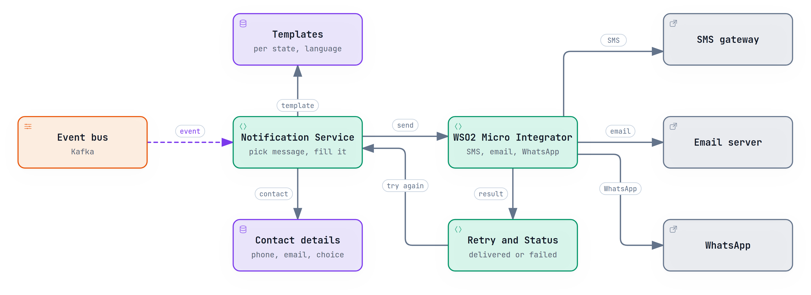
Notifications: how it works and what we use
How it works
- A case event arrives (submitted, correction needed, paid, decided)
- The service picks the template in the person's language and sends it by their chosen channel
- Delivery status is kept for each message
What we use
- Kafka consumer in the Notification Service
- Templates in PostgreSQL
- WSO2 Micro Integrator for SMS, email and WhatsApp
Rules we keep
- Only channels switched on for the state are used
- Content and trigger points are set by the service owner
- A person is never sent the same message twice for one event
When something fails
- A failed message is retried, then shown as failed
- A failed message never undoes a decision
- Failures are visible to support
Operators and Centres
Module 13: assisted applications at service centres.
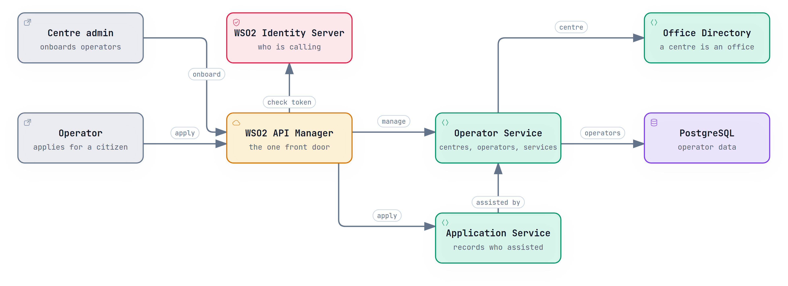
Operators and Centres: how it works and what we use
How it works
- A centre is added to the directory and its operators are onboarded
- The operator signs in and applies for a citizen
- The application records both the citizen and the operator who helped
What we use
- Operator Service on PostgreSQL
- Office Directory for centres
- Spreadsheet import for operator lists
Rules we keep
- The applicant is always the citizen, never the operator
- Operators see only the services their centre may offer
- Wallets or commissions are added only if the government's model needs them
When something fails
- An operator removed mid-way keeps their past work on record
- Unverified operator accounts cannot apply
- Assisted applications can be listed by centre and operator
Outside Connections
Module 14: how the platform talks to other systems.
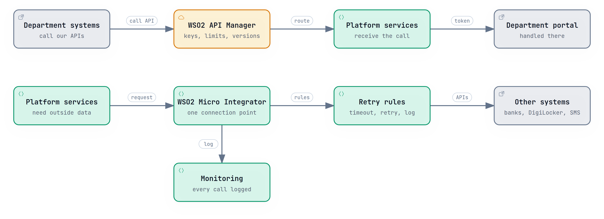
Outside Connections: how it works and what we use
How it works
- Departments reach us only through WSO2 API Manager, with their own keys and limits
- When we need an outside system, the request goes through WSO2 Micro Integrator
- Handing a citizen to a department portal uses a signed token and a callback
What we use
- WSO2 API Manager and its developer portal
- WSO2 Micro Integrator for all outbound links
- Kafka for events about every call
Rules we keep
- Every connection has an agreed contract and a named owner
- Callbacks are signed and repeat-safe
- No service talks to an outside system directly
When something fails
- Slow or failed calls are retried, then listed for the owner
- A broken connection never loses a case
- Monitoring shows which connection is failing
Grievances and Appeals
Module 15: complaints and appeals.
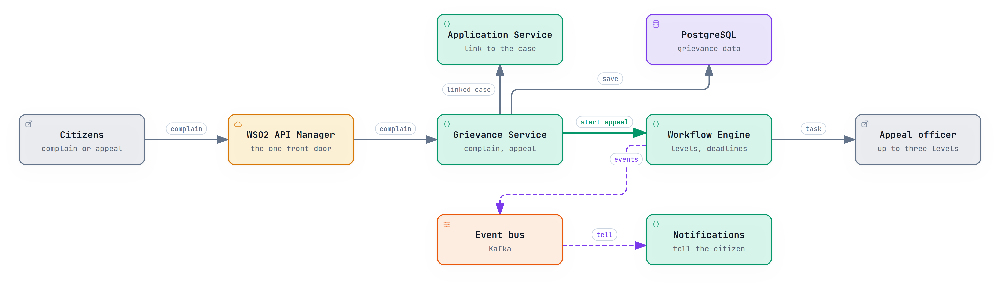
Grievances and Appeals: how it works and what we use
How it works
- A citizen raises a complaint or an appeal against a case
- It is linked to the original case and goes to the right authority
- Escalation moves it up to three levels
What we use
- The same Workflow Engine for appeal steps
- Grievance Service on PostgreSQL
- Notifications on Kafka events
Rules we keep
- A technical support ticket is not an appeal
- An appeal never changes the original case record
- Deadlines and escalation rules are set per service
When something fails
- An overdue appeal escalates automatically
- If notification fails the status still updates
- The citizen can always see where the appeal stands
Reports and Dashboards
Module 16: reporting without slowing the live system.
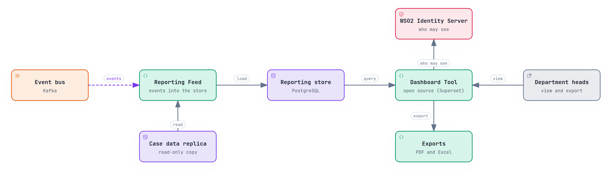
Reports and Dashboards: how it works and what we use
How it works
- Reports read from a copy of the data, not the live tables
- Events keep the copy up to date; a nightly read fills gaps
- Dashboards show received, pending, overdue, payments and grievances
What we use
- A read replica and a reporting store on PostgreSQL
- Apache Superset as the dashboard tool
- Kafka events for the feed
Rules we keep
- Each measure is defined and agreed before a dashboard is built
- Access follows the same roles and offices as everything else
- Exports are logged
When something fails
- If the feed lags the dashboard shows when it was last updated
- A broken report never touches live cases
- Totals can be checked against case counts
Publishing and Versions
Module 17: putting a service live safely.
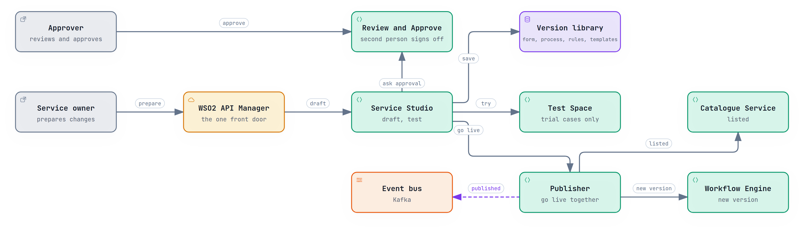
Publishing and Versions: how it works and what we use
How it works
- Forms, process, rules and templates are saved together as one version
- The version is tested, reviewed by a second person and then published
- Publishing updates the catalogue and the Workflow Engine together
What we use
- PostgreSQL version library
- A Test Space with trial cases
- Kafka event when a version goes live
Rules we keep
- Running cases keep the version they started with
- Only an approved version can go live
- Retiring a service stops new applications, not existing ones
When something fails
- If one part cannot be published, none go live
- A bad version can be withdrawn back to the last good one
- Every publish is recorded
History and Operations
Module 18: a record of everything, and keeping it running.
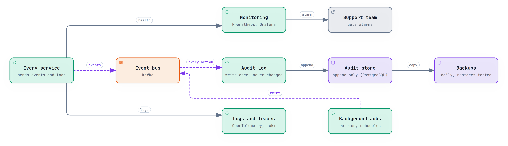
History and Operations: how it works and what we use
How it works
- Every action, decision, setting change and sign-in becomes an event
- The Audit Log writes each one once and never changes it
- Monitoring and traces show how the system is doing
What we use
- Kafka and an append-only PostgreSQL audit store
- Prometheus and Grafana for monitoring
- OpenTelemetry and Loki for traces and logs
Rules we keep
- Audit records cannot be edited or deleted by anyone
- Backups are tested by restoring them
- Security checks are part of every module
When something fails
- An alarm goes to the support team when a service fails
- Failed background jobs are retried and then listed
- A recovery plan is rehearsed, not only written
States on the Platform
Module 19: one platform for many states.
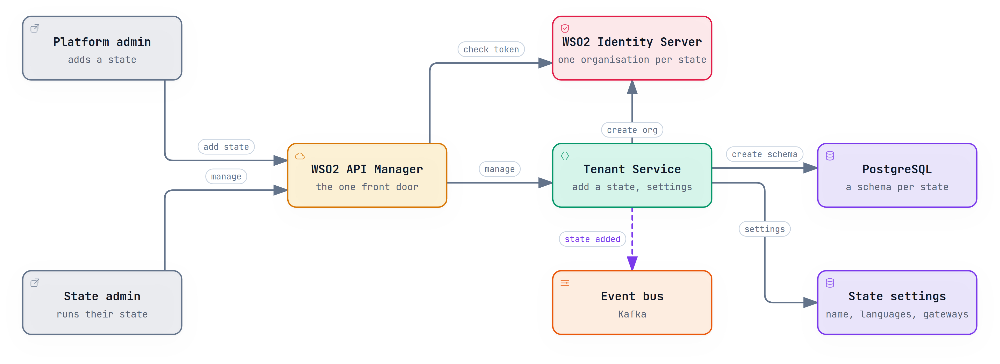
States on the Platform: how it works and what we use
How it works
- A state is a tenant; departments and service units sit inside it
- Adding a state creates its organisation, its database schema and its settings
- Each state gets its own name, languages, branding and web address
What we use
- WSO2 Identity Server organisations
- One PostgreSQL with a schema per state
- A Tenant Service that sets up and removes states
Rules we keep
- A state sees only its own data
- Platform support reaches a state only with explicit approval
- Every setting is per state, never shared by accident
When something fails
- A half-finished state setup is rolled back
- A state can be suspended without touching others
- Backups and restores can be done per state
Moving Karnataka
Module 20: bringing existing services and applications across.
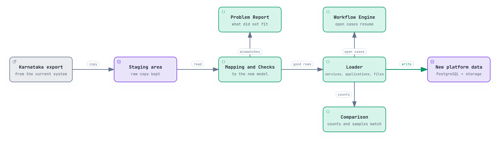
Moving Karnataka: how it works and what we use
How it works
- The export is copied as it is into a staging area, never altered
- Mapping turns it into the new model and reports what does not fit
- The Loader writes services, applications, files, documents and payment references
What we use
- A staging schema in PostgreSQL
- An import service that can be re-run safely
- Comparison reports and rehearsal runs
Rules we keep
- Old application numbers and certificate QR checks keep working
- Every row keeps where it came from
- Open cases are restarted at the right step, not from the beginning
When something fails
- Rows that fail mapping go to a report, not silently dropped
- A rehearsal is repeated until the numbers match
- Cutover has a rollback that keeps decisions and payments made since
More ServicePlus Features
Features NIC lists that sit outside the first 20 modules.
Bulk Processing
Extra feature (Module 21): act on many cases at once.
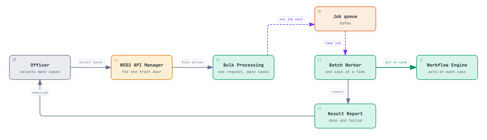
Bulk Processing: how it works and what we use
How it works
- The officer selects many cases and one action
- Each case becomes its own job, handled one at a time in the Workflow Engine
- A report lists what worked and what failed
What we use
- A Kafka queue for the jobs
- The same Workflow Engine and access checks as single actions
Rules we keep
- Every case still passes the access check
- Each case keeps its own history entry
- The same action ID is used as for a single case
When something fails
- A failed case does not stop the rest
- Failed cases are listed and can be retried
- Running the same bulk request twice does not double-act
Derived Services
Extra feature (Module 22): one approved service offers a follow-on service.
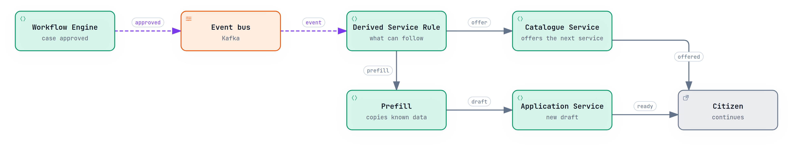
Derived Services: how it works and what we use
How it works
- When a case is approved, a rule decides which service can follow, for example a licence after a registration
- The citizen is offered it and the new draft is prefilled from the first case
- The two applications stay linked
What we use
- Rules in the same rule tables
- Events on Kafka, prefill by the Application Service
Rules we keep
- The follow-on service has its own rules, fees and workflow
- Prefilled data can be changed by the citizen
- The link to the first case is kept
When something fails
- If the first case is later cancelled the follow-on is flagged
- If prefill fails the citizen starts a normal blank form
Benefit Payments (PFMS and DBT)
Extra feature (Module 23): paying a benefit after approval.
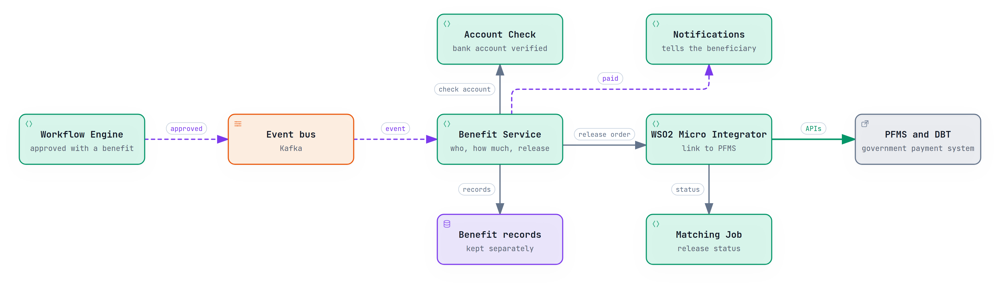
Benefit Payments (PFMS and DBT): how it works and what we use
How it works
- After approval the Benefit Service prepares who is paid, how much and how
- The bank account is verified before a release order is sent
- Status comes back and is matched against the order
What we use
- WSO2 Micro Integrator for the PFMS link
- A separate benefit record store and a Matching Job
Rules we keep
- A benefit is paid once per approval
- The amount comes from the approved case, never typed again
- Money records are kept apart from application records
When something fails
- A rejected account sends the case back for a correction
- A release with no answer is checked again
- Unmatched releases go to a finance problem list
Time Limits and Tracking
Extra feature (Module 24): statutory deadlines and who is told when late.
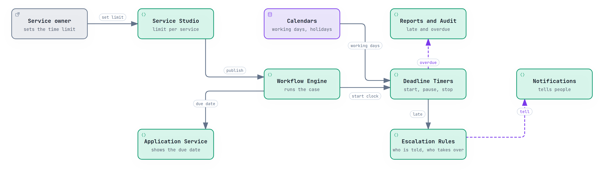
Time Limits and Tracking: how it works and what we use
How it works
- Each service has a time limit, such as 21 working days
- A clock starts when the case starts and uses a working-day calendar
- Late cases are escalated and counted in reports
What we use
- Deadline Timers in the Workflow Engine
- A calendar per state with holidays
- Notifications and Reports for the alerts
Rules we keep
- The clock can pause while waiting for the citizen if the service allows
- Escalation authorities are set per service
- The citizen sees the due date
When something fails
- If a timer fails, the case is flagged for checking
- A missed deadline never changes the decision
- Calendar changes apply only to new clocks
Service Search
Extra feature (Module 25): finding the right service.
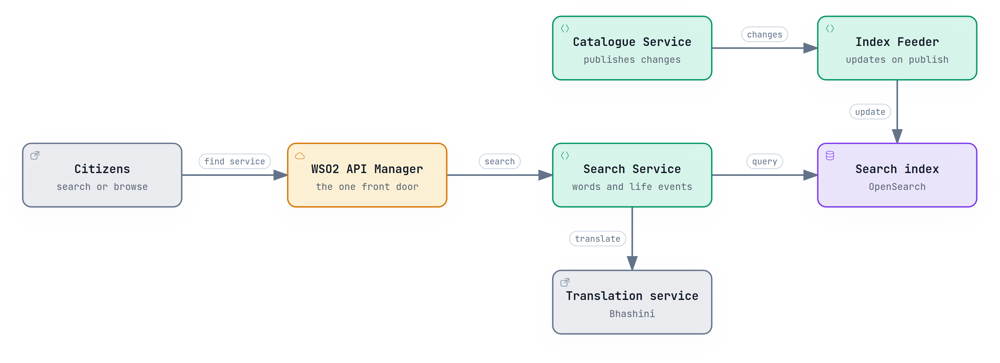
Service Search: how it works and what we use
How it works
- The citizen types in their own language or picks a life event
- The Search Service finds matching services and shows who can apply
- The list updates when a service is published or retired
What we use
- OpenSearch for the index
- Bhashini for translation
- The Catalogue Service stays the source of truth
Rules we keep
- Search shows only services available to that state and channel
- Results never show retired services as open
When something fails
- If search is down, the full list still opens from the catalogue
- If translation fails the original language is shown
Platform Views
Channels, data, security and deployment across the whole platform.
Channels and the AI Assistant
Who uses the platform, and how the AI assistant fits in.
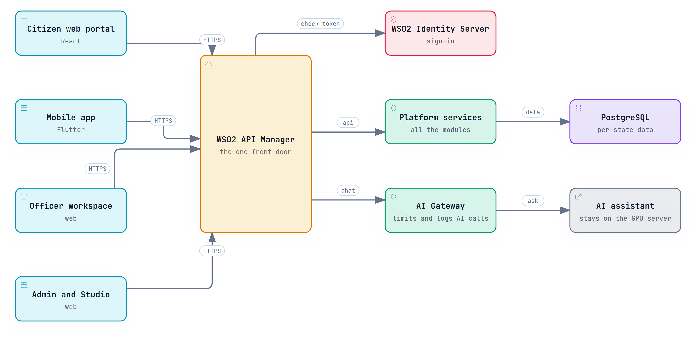
Channels and the AI Assistant: how it works and what we use
How it works
- Four front ends all use the same APIs through the API Manager
- The mobile app and web portal show the same services and forms
- The AI assistant answers questions; it does not decide cases
What we use
- React for the web, Flutter for mobile
- WSO2 API Manager and Identity Server for every call
- An AI Gateway in front of the assistant
Rules we keep
- The assistant sees only what the signed-in person may see
- AI calls are limited, logged and cannot change data
When something fails
- If the assistant is down everything else works
- The AI server is separate; this platform only calls it
Data Model
The main records, and how a state keeps its own.
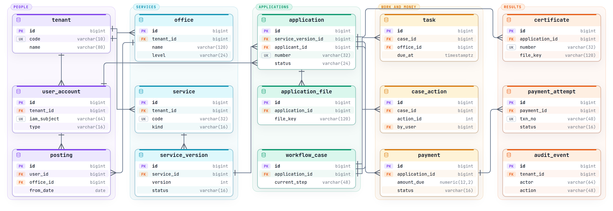
Data Model: how it works and what we use
How it works
- Every record belongs to a state, so a state sees only its own rows
- Service versions pin the form, process and rules an application used
- Money records are separate from application records
What we use
- One PostgreSQL with a schema per state
- Keys and table names are the same in every state
Rules we keep
- History tables are never updated or deleted
- Applications keep the version they started with
- Files are stored outside the database; only their keys are kept
When something fails
- A failed write is retried, never half-saved
- Backups and restores can be done per state
- Migrations are rolled out state by state
Security
Zones, keys, secrets and watching for trouble.
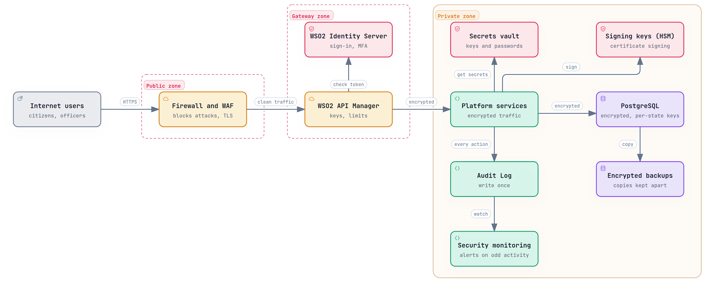
Security: how it works and what we use
How it works
- Traffic is cleaned at the edge, then every call is checked at the API Manager
- Services run in a private zone and use secrets from a vault, never from files
- Certificates are signed with keys held in a hardware module
What we use
- WSO2 Identity Server for sign-in and MFA
- A secrets vault, an HSM for signing, TLS everywhere
- Encrypted storage with a separate key per state
Rules we keep
- No service talks to the internet directly
- Every action is written once and cannot be edited
- Support staff reach a state only with approval
When something fails
- A strange pattern raises an alert to the support team
- A leaked key can be replaced without stopping services
- Backups are encrypted and restores are rehearsed
Deployment and Recovery
How it is built, released, run and recovered.
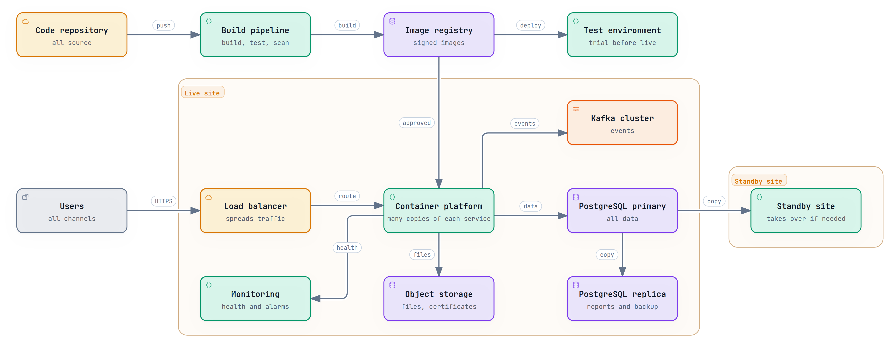
Deployment and Recovery: how it works and what we use
How it works
- Code goes through a build pipeline that tests and scans it, then makes signed images
- Images are tried in a test environment, then released to the live platform after approval
- Live runs several copies of each service so one failure does not stop service
What we use
- Containers on a standard container platform (Kubernetes)
- The government chooses where this runs: its own data centre or an approved cloud
- Replicas, standby site and tested backups
Rules we keep
- Nothing is changed by hand on live
- A release can be rolled back
- Each state can be backed up and restored on its own
When something fails
- If a copy fails, another takes its place
- If the main site is lost, the standby site takes over; recovery targets are agreed with the department
- Alarms go to the support team before citizens notice